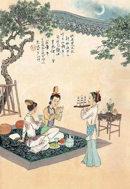
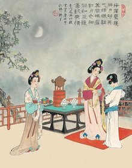
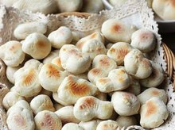

 穿针乞巧 |
这是最早的乞巧方式，始于汉，流于后世。《西京杂记》说：“汉彩女常以七月七日穿七孔针于开襟楼，人具习之。”南朝梁宗谋《荆楚岁时记》说：“七月七日，是夕人家妇女结彩楼穿七孔外，或以金银愉石为针。”《舆地志》说：“齐武帝起层城观，七月七日，宫人多登之穿针。世谓之穿针楼。”五代王仁裕《开元天宝遗事》说：“七夕，宫中以锦结成楼殿，高百尺，上可以胜数十人，陈以瓜果酒炙，设坐具，以祀牛女二星，妃嫔各以九孔针五色线向月穿之，过者为得巧之侯。动清商之曲，宴乐达旦。土民之家皆效之。”元陶宗仪《元氏掖庭录》说：“九引台，七夕乞巧之所。至夕，宫女登台以五彩丝穿九尾针，先完者为得巧，迟完者谓之输巧，各出资以赠得巧者焉。” |
 拜织女 |
“拜织女”纯是少女、少妇们的事。她们大都是预先和自己朋友或邻里们约好五六人，多至十来人，联合举办。举行的仪式，是于月光下摆一张桌子，桌子上置茶、酒、水果、五子（桂圆、红枣、榛子、花生，瓜子）等祭品；又有鲜花几朵，束红纸，插瓶子里，花前置一个小香炉。那么，约好参加拜织女的少妇、少女们，斋戒一天，沐浴停当，准时都到主办的家里来，于案前焚香礼拜后，大家一起围坐在桌前，一面吃花生，瓜子，一面朝着织女星座，默念自己的心事。如少女们希望长得漂亮或嫁个如意郎、少妇们希望早生贵子等，都可以向织女星默祷。玩到半夜始散。 |
 吃巧果 |
七夕的应节食品，以巧果最为出名。巧果又名“乞巧果子”，款式极多。主要的材料是油面糖蜜。《东京梦华录》中之为“笑厌儿”、“果食花样”，图样则有捺香、方胜等。宋朝时，市街上已有七夕巧果出售。 若购买一斤巧果，其中还会有一对身披战甲，如门神的人偶，号称“果食将军”。巧果的做法是：先将白糖放在锅中熔为糖浆，然后和入面粉、芝麻，拌匀后摊在案上捍薄，晾凉后用刀切为长方块，罪尤折为梭形面巧胚，入油炸至金黄即成。手巧的女子，还会捏塑出各种与七夕传说有关的花样。此外，乞巧时用的瓜果也可多种变化。或将瓜果雕成奇花异鸟，或在瓜皮表面浮雕图案，称为“花瓜” 。 巧果及花瓜是最普通的七夕食品。而在历史上各朝代则另有不同的食俗。例如魏朝流行于七月七日设汤饼。唐朝的节日食品包括七月七日进斫饼，并订七月七日为晒书节，三省六部以下，各赐金若干，以备宴席之用，称为“晒书会”。七夕同时也是适宜配药的日子。据说一种以松柏为药材的秘方，这种神奇的药丸以七月七日的露水调配合成，服一丸可延长十年的寿命，服二丸可延二十年。此外，还有饵松实、服柏子、折荷叶等，均号称为长生不老的仙药。比较实用的药方有晒槐汁治痔，煎苦瓜治眼，摘瓜蒂治下痢等等不一而足。其功效如何，就只有试过的人才知道了。如今浙江的杭州、宁波、温州等地，在七夕这一天，人们还会用面粉制作各种小型物品，放到油锅里煎炸后称“巧果”。晚上还会在打扫干净的庭院里，摆上巧果、莲蓬、白藕、红菱等，家中亲友围坐在一起。 |